In the History Section you can overwatch all runs. 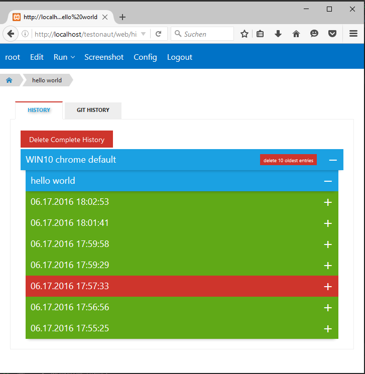
You can delete the oldest run result, or the complete history. 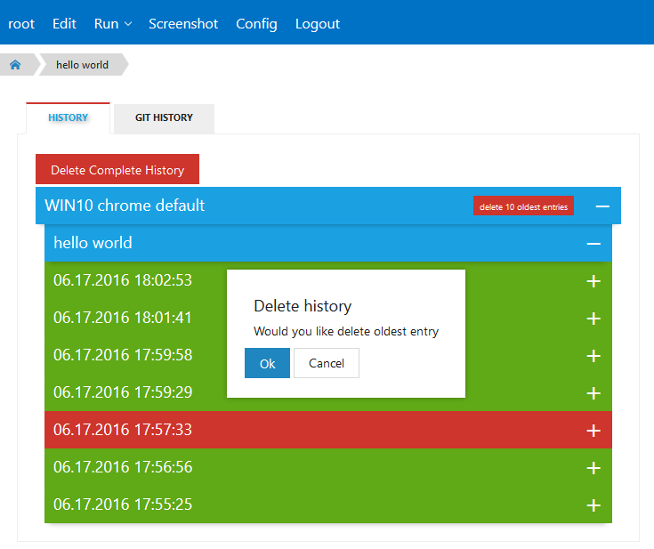 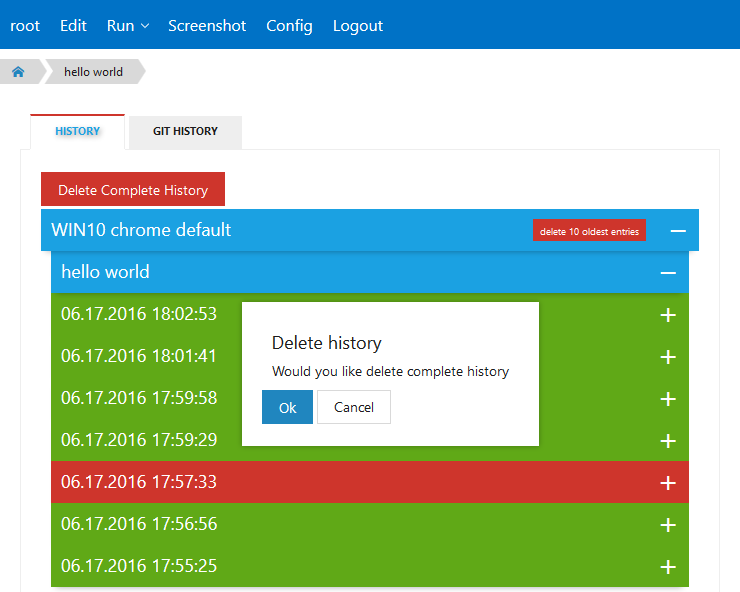
All pages are under version control. You have under the tab section [git history] an overview over your page history.
You can make a checkout (btw a rewert) to older versions, or you can check the different between different revisions.
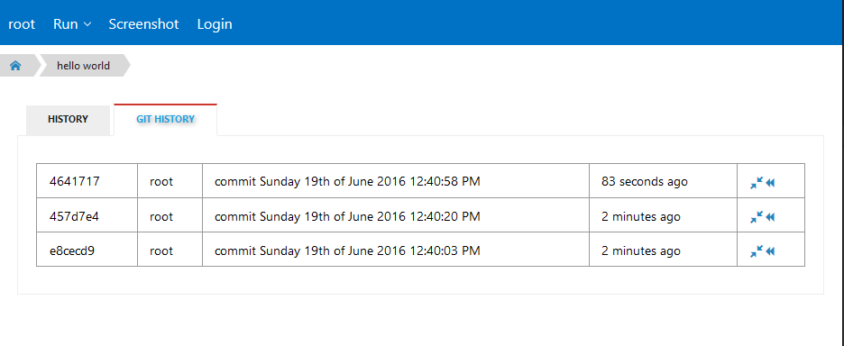
With a click on the rewind button you make a checkout to a specific version. 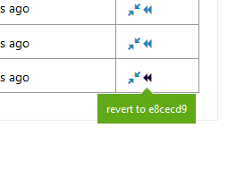 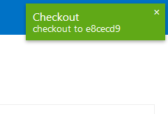
For a comparison you selected two versions with a click on the compare symbol. And you get a different between the selected versions.
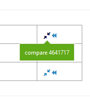
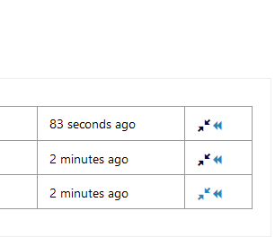
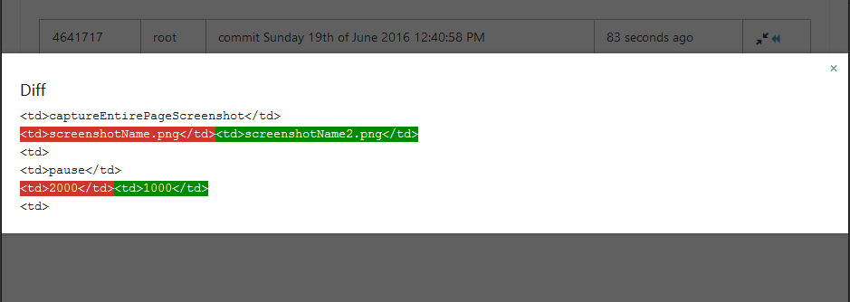
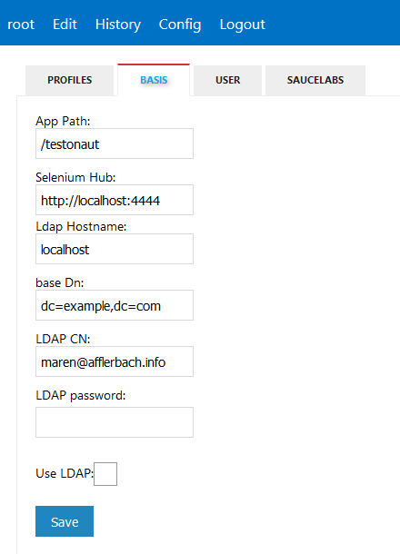
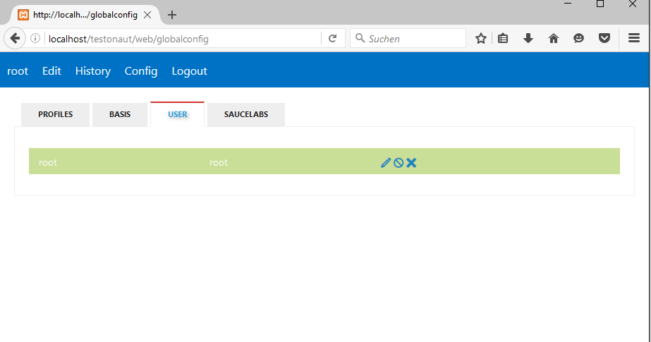 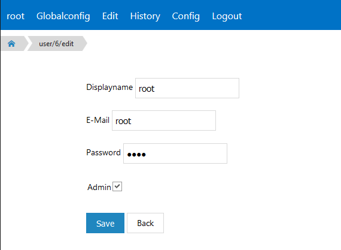
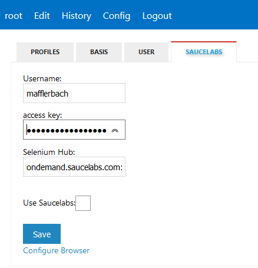